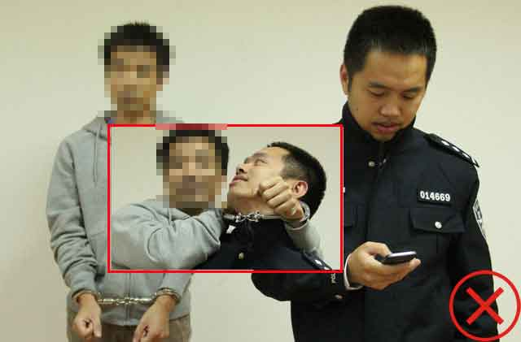
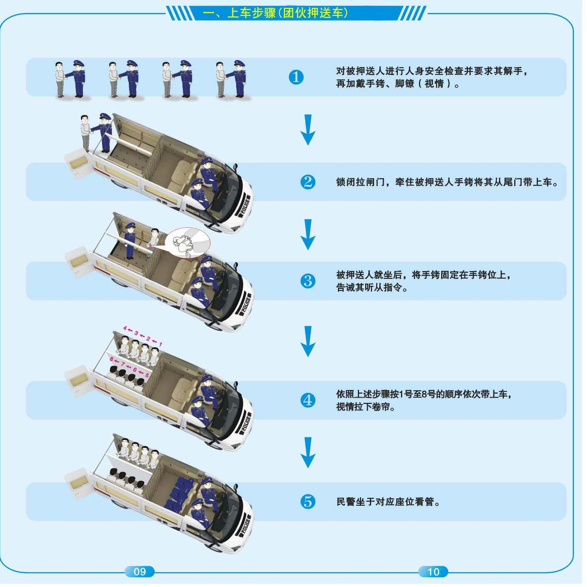

重点提示：
押送对象在任何时段都必须在押送警力视线范围之内活动（即便是就厕、睡觉）；徒步行进全过程，必须牵引控制由押送对象的肢体（尤其是楼上、水边）。
一、通用规则
(一)本章的押送是指下列押送活动：
1、将违法犯罪嫌疑人押回至办案单位；
2、外出就医、辨认、鉴定、搜查、指认抓捕等；
3、押回逃犯；
4、投送、转移羁押场所；
5、解回再审。
对于日常巡逻、接处警过程中当场抓获的违法犯罪嫌疑人的押送，参照本章规定。
人数较多的集中押送活动根据押送任务制定押送工作方案。
(二)押送警力和押送对象一般按2:1的比例配置，押送前应当进行风险评估，适当增减押送警力。风险评估的主要参数有：
1、押送对象的人数；
2、押送对象的个体情况。包括性别、年龄、体格状况，是否有前科，有无脱逃、行凶、自杀、自残的可能或曾实施过上述行为等；
3、案件的性质。如是否为暴力犯罪；
4、任务的难易程度。如是否为长途押送，途经的环境是否复杂等；
5、装备情况。如是否使用警用押送车，是否使用手铐、脚镣等械具；
6、押送警力个体情况。如年龄、性别、体格、工作经验等。
(三)押送女性对象，一般应有女性工作人员参与押送。
(四)每次押送行动都要确定1名负责人，根据不同的押送情形合理分配驾驶、看管、摄录等任务。押送负责人负责押送工作的全程监管。
(五)每名押送对象至少有1名对应的看管员负责看管。看管员的主要职责就是紧紧看管住对应的押送对象，一般不得从事其他工作，防止因为不集中精力看管而造成脱逃、行凶、自杀、自残等执法安全事故。

看管员没有集中精力看管
(六)押送警力应携带必要的警械、武器、防护装备，携带对讲机或者互相记录手机号码，保持通讯联络畅通。
(七)押送前应对押送对象进行全面细致的人身安全检查，其随身物品应当由押送的民警携带保管。
嫌疑人随身物品由民警保管 嫌疑人随身物品自行保管
(八)押送过程中要依法使用手铐，使用手铐时要做到：
1、在公共场所时要对手铐进行遮掩，避免人员围观和拍照；
公共场合对手铐进行适当遮掩
2、押送期间解开手铐会增加脱逃的风险，要尽量减少押送途中解铐的次数。确需解铐时要加强戒备，并尽量在相对安全的处所进行；
在安全的处所解铐
在没有安全防护措施的地方解铐
3、保持手铐宽松适度，防止过宽滑脱（此类脱逃事故各地常有发生，尤其是腕骨较粗而手部较瘦的人员）、过紧致伤。另外在押送期间应经常检查手铐状况。
手铐过松容易滑脱
手铐过紧容易致伤
(九)押送下列人员时，需要加戴脚镣：
1、涉嫌重特大案件或暴力犯罪的；
2、惯犯、累犯；
3、有明显脱逃、行凶、自杀、自残迹象的或曾实施上述行为的；
4、长途押送的。
(十)押送可能或已经被判处无期徒刑、死刑的对象以及涉黑、涉恐等有组织犯罪的对象，应当做到：
1、押送警力至少3倍于押送对象（其中看管员必须2倍以上）；
2、押送警力须携带武器；
3、对押送对象同时使用手铐、脚镣；
4、为了防止押送对象受到袭击、劫夺，押送警力和押送对象视情加戴头盔、穿戴防护背心。押送过程中押送警力尤其须加强警戒。
押送警力和押送对象加戴头盔、穿戴防护背心
(十一)押送同案嫌疑人时，应采取分批押送、人身隔离、加戴头套等方式防止互相串供。
相隔座位押送同案嫌疑人 相邻座位押送同案嫌疑人
(十二)整个押送过程，要始终保持警惕，特别是对就厕、就餐、就医、辨认、搜查、指认抓捕等容易发生脱逃、行凶、自杀、自残情况的环节，要时刻观察押送对象的一言一行及情绪波动，严防发生各种安全事故。
(十三)押送行动中需要就餐的，可以向押送对象提供面包、饼干等方便食物，一般不提供碗、筷、勺等可用于自伤自残的器具。押送警力也应简便用餐，原则上不得进餐厅就餐，严禁饮酒或含酒精的饮料。
提供面包、饼干等食物 提供碗、筷、勺等器具
(十四)短途押送时，提前告知押送对象途中将不安排就厕，要求其提前解决；中、长途押送时，不应让押送对象大量喝水。
押送对象就厕须经押送负责人同意，并注意以下事项：
1、尽量选择一楼、人流量小的厕所；
2、选定厕所后，押送警力应熟悉厕所周边的环境，掌握进出通道，移除厕所内可用于行凶、自杀、自残的物品；
厕所内无异物
厕所内有可用于行凶的物品（灭火器）
3、尽可能将手铐一端固定在厕所内可以固定的位置上，如果没有可以固定手铐的位置，则将手铐一端铐在押送警力的手上；
就厕时手铐一端铐在固定物上
就厕时手铐一端未铐在固定物上
4、押送对象在任何时候都不得脱离看管员的视线。因空间原因押送警力无法全部进入厕所的，则至少有１名看管员进入厕所，留在厕所门外的警力要密切监视厕所内的情况，严防押送对象突然锁门、袭人、跳窗等。
女性押送对象就厕时，应有女性警力进入厕所看管。因特殊情况没有女性警力参与押送的，可请求在场女性群众帮助；
空间较小的厕所，１名看管员进内，
看管员都在厕所门外
１名在外抵住门框
5、2名以上押送对象同时需要就厕时，应当逐一进行；
6、若在野外方便的，应避开桥梁、悬崖、水边等危险地段。
(十五)押送途中需住宿的，应当将押送对象羁押于监管场所，严禁与押送对象一同住宿。
二、徒步押送
(一)徒步押送是指押送过程中所有步行的过程，包括押送对象上下车、船以及外出辨认、就医、搜查等一切徒步过程。
(二)全程使用“牵引式”（即抓住手铐链接处）、“携臂式”（即用胳膊挽住嫌疑人手臂）等方式控制押送对象（以往发生的押送对象脱逃、行凶事故不少是未按照该要求操作所致）。
单人押送正铐“牵引式”
单人押送反铐“牵引式”
未进行“牵引式”押送
未进行“牵引式”押送
(三)尽量避免进入人员密集区、交通要道，或靠近湖泊、河道、崖边、铁路等危险区域，确需进入或靠近上述区域时，应当加强戒备，紧紧牵引住押送对象，保持安全距离，防止其猛然挣脱后撞车、跳河、行凶等。
与湖边保持适当距离
过于靠近湖边
(四)进入2楼以上楼层以及上、下楼梯时，必须牢牢牵引住押送对象，让其远离可以坠跳的一侧。
押送对象远离过道外侧
押送对象靠近过道外侧
三、汽车押送
(一)押送前后都应当对车辆进行检查，内容包括：
1、门、窗、锁等是否可以正常使用；
2、押送对象上车前，须移除无关物品，例如修理工具、灭火器、座位缝隙处的异物、机油、汽油、防冻液[乙二醇，吞食70-100毫升即可致死，其他省市曾发生过押送对象吞服防冻液致死的案例]等；
车内放无关物品
3、押送对象下车后须仔细检查车辆内部，尤其是夹缝、边角、座位底下等部位，注意发现押送对象将有关证物丢弃在车内。
下车后立即检查
车内留有证物，未作检查
(二)同车押送多人时，应当将危险程度较高的人员安排在最安全的位置。
(三)任何时候都不得将押送对象单独留在车上。
将押送对象单独留在车上
(四)司机离车时应当熄火，拔下车钥匙（曾发生过因未拔车钥匙，造成嫌疑人发动汽车逃离的案例）。
驾驶员离开车辆时未拔掉钥匙
(五)押送至监管场所的，应当做到：
1、同车押送２人以上至不同羁押场所的，由近及远确定投送顺序。押送距离相近的，先投送危险程度较高的人员；
2、押送警力必须在押送车辆驶入监管场所缓冲区后方可安排押送对象下车；
关上大门后在缓冲区内下车 在监管场所大门外面下车
3、押送对象在进入监管场所后至移交监管人员期间，看管责任仍由原单位押送警力负责。押送警力仍须高度戒备，始终采用“携臂式”、“牵引式”等方式，直至将押送对象移交给监管部门。
(六)使用警用押送车押送。
1、按照下述图示的要求将押送对象押送上车和下车；


2、民警应当时刻监视押送对象，确保手铐、脚镣、隔间门处于锁闭状态；
3、除需要进行辨认等情况外，窗帘应予以关闭；
4、如果使用脚镣的，应当将脚镣固定在脚镣位上；
5、押送对象要就厕的，一般使用车上的尿壶；
6、押送对象之间有串供可能的，应当逐个从办案区带至押送车上，可以加戴头罩，并尽量安置在两头的隔间；押送3至4名同案人员的，必须从前至后安置、从后至前带离，防止串供；
7、押送对象有自杀、自残可能的，应加戴头盔；
8、押送对象身体乱动且不听从民警指令的，可使用约束带约束；
9、押送车上的装备应按照规定放置，保持性能良好，做到原取原放。
(七)使用普通车辆押送。
1、执行押送任务应当使用警用押送车，因特殊原因使用普通车辆押送的，须经办案单位负责人同意；
2、不能让押送对象最早或最后上、下车。上车后将押送对象安排在押送警力中间就坐，行进过程中关闭门锁，并开启儿童锁功能；
3、车辆行进过程中，要特别防止押送对象抱着同归于尽的想法用手、脚、头或身体等部位突然袭击驾驶员，造成车辆失控。
押送对象坐中间 押送对象坐边侧
（袭击民警、探窗）
四、火车押送
(一)购票时跟售票员说明情况，尽量安排相邻座位或同一卧铺包厢。
(二)与铁路公安部门、列车乘警联系，请求对方给予下列协助：
1、购票、候车期间将押送对象羁押于车站派出所或警务室内；
2、选择其他通道进入站台，提前上车、延后下车，避免与其他乘客混杂；
3、上车后及时与列车乘警联系，介绍相关情况，获得对方的帮助（如调整座位、协助押送等），并记录列车乘警的联系方式，以便在发生紧急状况时能够立即联系。
(三)全程使用手铐，视情加戴脚镣。上下车厢及穿过车厢过道时，押送警力须紧紧牵引住押送对象，让押送对象走在中间，防止其突然夺取其他旅客放于桌上的水果刀等物品。
正铐牵引，嫌疑人处于中间
嫌疑人处于中间，但未牵引
反铐牵引，嫌疑人处于中间
嫌疑人走在前面，未被牵引
(四)乘坐坐席位的，尽量选择车厢的最后两排座位，将押送对象安排在２名押送警力中间就坐，可以将手铐一端铐在座椅扶手、茶几立柱或押送警力手上。
押送对象坐中间
押送对象坐在靠近打开的窗户的一侧
押送对象坐在过道一侧
(五)乘坐卧铺的，将押送对象安排在中、上铺位置，将手铐一端铐在铺位的横杠上，并检查横杠是否牢固、螺丝是否松动等。
手铐未铐在床栏上
押送对象睡下铺
(六)列车行程较长的，看管员可轮流休息，但必须确保24小时全程有人值守，监视押送对象的一举一动。
押送对象睡中铺，并铐在
看管员与押送对象一同睡觉
床栏上，看管员轮流休息
(七)不论坐席或卧席押送，上车后都应当立即求得邻近及周边乘客的支持与配合，告知乘客管好随身的物品，切忌将水果刀、玻璃器皿等危险物品摆放在押送对象随手可取的位置。
(八)押送对象就厕时，应严防砸（跳）窗逃跑，应有1名押送警力进入厕所内看管。此外为预防押送对象突然锁门，就厕前可与列车员联系，备好厕所门的钥匙。
(九)押送警力不得随意离开押送对象，确需离开的，应逐个替换、速去速回。
五、飞机押送
(一)人员要求
1、押送警力数至少３倍于押送对象，押送人员应当是正式在职民警。押送女性对象应至少有一名女性民警。
2、同机押送对象的总数不得超过3名。
(二)提前审批
1、乘坐飞机执行押送任务必须经过审批。押送一般对象的审批程序为：①承办人员填写《押解犯罪嫌疑人乘坐民航班机审批表》一式两份（见附件）→②分（县）、市局领导审核（专业警种由该警种负责人审核）→③承办人员持强制措施法律文书、《押解犯罪嫌疑人乘坐民航班机审批表》，通过市局办公室机要室提呈市局分管或值班领导审批。
2、押送公安部督捕或者A级通缉的对象乘坐民航班机的，或者乘坐中国民航班机押送出入境的，经市局审批后还应报民航局公安局（即公安部第十五局）批准。审批时将《介绍信》、《人民警察证》、《押解犯罪嫌疑人乘坐民航班机审批表》、强制措施法律文书等传真至公安部第十五局指挥中心（010-65135525），公安部第十五局批准后，凭传真件办理乘机手续。
3、审批手续应当预先办理，然后持《押解犯罪嫌疑人乘坐飞机审批表》原件办理押解手续。临时执行押送任务的，可以使用传真件或者复印件。
(三)乘机流程
1、预定航班。押送对象不得与重要旅客同机、不得乘坐头等舱，故预定航班之前应当提前与出发地机场公安机关联系，确认班机没有重要旅客后再购买相应机票（重要旅客是指：省、部级（含副职）以上负责人，军队在职正军职少将以上负责人以及公使、大使级外交使节）。
2、办理押送手续。押送人员一般应提前4小时到达机场，将押送对象临时羁押于机场公安机关。而后凭《介绍信》、《人民警察证》、《押解犯罪嫌疑人乘坐民航班机审批表》与出发地机场公安机关联系办理押解手续，由机场公安机关出具《协助押解犯罪嫌疑人乘坐民航班机通知书》。
3、武器托运。押送人员不得携带武器上机，携带的武器应在机场公安机关的协助下使用专门通道办理托运和领取手续。
4、登机。押送人员应早上机、晚下机，避免对同机旅客造成不便。经过安检时，应当主动告知安检人员，递交《协助押解犯罪嫌疑人乘坐民航班机通知书》第二联并接受相关查验。登机时，应当主动向航班机组告知并递交《协助押解犯罪嫌疑人乘坐民航班机通知书》第三联。上机后，将押送对象安排在2名押送警力中间或靠窗一侧就坐并全程控制，不允许押送对象单独行动（上述手续一般在机场公安机关协助下进行）。
5、中转。中转当日航班的（即连续中转），凭《人民警察证》、《押解犯罪嫌疑人乘坐民航班机审批表》及始发地机场公安机关出具的《协助押解犯罪嫌疑人乘坐民航班机通知书》复印件，在中转机场直接过站或者中转押送，不再重新办理押送手续。
(四)其他事项
1、押送对象没有有效乘机身份证件的，通过机场公安机关为其办理临时乘机身份证明。
2、押送境外（含港、澳、台）对象乘机出境的，一般应当乘坐其本国（地区）或者目的国（地区）航班。
3、对符合使用约束警械条件的押送对象，可以使用手铐等械具将其约束，但械具不宜外露。如果出发地机场公安机关认为不宜使用手铐、脚镣的，应使用约束带、塑料软手铐约束押送对象，或用夹板固定押送对象的关节。
塑料软手铐
六、船只押送
(一)应当首选警用船只，在没有警用船只的情况下尽量选择船型较大的船只。
(二)应选派会游泳、救生的警力参与押送。
(三)押送警力及押送对象应穿上救生衣。
押送警力和押送对象穿上救生衣 未穿上救生衣
(四)上下船、途经甲板时必须采用“牵引式”、“携臂式”押送，不得让押送对象处于最先、最后、最外侧位置，警惕押送对象跳水或将押送警力推下水。
押送对象走在押送警力中间 押送对象走在靠近水面的一
押送对象在押送警力之间上(下)船 押送对象最先(或最后)上船
(五)选择远离水面的位置就坐，尽可能将押送对象固定在船上。
押送对象在远离水面的位置就座，
押送对象在靠近水面的一侧就座
并将手铐固定在船上
(六)采用游轮、客船执行押送任务时，其他事项参照“火车押送”的要求执行。
七、外出就医
至设有“绿色通道”的定点医院就医
(一)押送对象需要外出就医的，优先选择设有“绿色通道”的定点医院就医。
(二)设有“绿色通道”的定点医院，须设立专门的等候室、专门就医渠道以及经改装后符合安全要求的厕所、X光诊疗室。
(三)等候室应配备独立门禁、监控、押送对象就座位、看管就座位等基本设施，并配备对应的LOGO、符号标识、操作图示等。
专用座位
专用LOGO

等候室
装备柜 手铐位
看管位

嫌疑人厕所 嫌疑人点滴位
嫌疑人检查室
(四)就医前，押送警力应提前与医院电话预约，告知押送对象的基本情况和基本病情，约定就医时间以及主诊医生等事宜。
(五)事先准备好警绳、塑料软手铐、约束带、胶带纸等物品备用，便于在进行某些特殊医疗检查（例如磁共振）时替换金属手铐。
(六)医院是一个公共复杂场所，押送对象很容易寻得行凶、逃跑等机会，因此外出就医的押送对象一般应当使用手铐或约束带等约束其双手，对刑事犯罪嫌疑人、劳教及强制隔离戒毒人员等可以加戴脚镣。
(七)到达医院后，将押送对象送至等候室，安排在指定的座位就座，将双手固定在手铐位上，看管员应实行面对面的看管。
(八)抽血、注射药物、简易伤口缝合及包扎、测量体温及血压等诊断医治以及就餐应当在等候室内完成。
(九)需要离开等候室进行其他医疗检查前，应先办妥相关的手续后再带离出室。离开等候室期间的就医过程应当做到：
1、进入其他诊疗室之前，先观察室内是否有医用镊子、剪刀、手术刀等危险物品，不得让押送对象靠近上述物品，条件允许时应提前将上述危险物品转移至安全位置（如放入抽屉、柜子内）；
2、如果诊疗室内有其他无关人员在场的，可以请医护人员协助将其劝离；
3、押送警力应当陪同押送对象一同进入诊疗室，若医生要求押送警力必须离开的，应向医生说明可能存在的危险情况，并实时守护房间所有的出入口；
4、治疗期间押送警力应尽可能牵引住手铐，或者铐在固定物上。对需要解除手铐、脚镣的检查项目（如磁共振），可用约束带、塑料软手铐、警绳等进行约束；
5、如果诊疗过程中需要用到剪刀、手术刀、镊子等锐器的，要严格控制住押送对象的双手，严防其伺机夺取。
(十)在等待报告出具和进一步治疗期间，应将押送对象带回等候室看管，并在等候室内再次对押送对象进行人身安全检查。
(十一)就医结束以后，押送警力在等候室内做好相关的登记工作，将押送对象带离等候室。
(十二)押送对象需要住院的，应当优先考虑转到青春医院、安康医院等医院。如果在本院治疗的，应当做到：
1、尽量选择单人病房，避免与其他病人共处一室；
2、移除房间内的危险物品；
3、对押送对象加戴手铐、脚镣，并固定在床沿；
4、24小时派警力在病房内值守，押送对象需要隔离的则在病房外值守。
定点医院的就医流程示意图
至普通医院就医
(一)至普通医院就医的，可以事先与院方沟通，争取开辟就医绿色通道。
(二)到达医院后，押送警力应熟悉医院的整体环境和出入口，记录保卫人员的电话，如发生脱逃等事故，可以立即取得协助。如有可能，可邀请医院保卫人员陪同就医。
(三)如需排队挂号、就医时，跟现场群众说明情况，取得谅解，优先就诊。
确需排队等候的，尽量将押送对象安排在院内僻静的角落或押送车上等候。
(四)押送对象需要注射生理盐水的，须注意：
1、提前要求医生配发袋装盐水，而不要使用瓶装盐水；
2、不宜将押送对象安排在公共输液室内，若只能安排在公共输液室内的，应选择角落位置；
3、输液期间，使用械具、约束带等将其手固定住。
(五)诊疗期间的其他安全事项，参照“至设有‘绿色通道’的定点医院就医”的相关要求执行。
八、外出辨认、搜查、指认抓捕
(一)
外出辨认、搜查、指认抓捕期间，看管员较容易分散精力，导致看管不严从而引发安全事故，因此执行上述任务期间，看管员必须保持高度警惕，不得分心，始终牵引住押送对象的手铐。
(二)
进入室内后要远离窗户、阳台，不得让押送对象靠近现场内可用于脱逃、行凶、自杀、自残的物品（如热水瓶、厨房内的菜刀等）。
押送对象靠近热水瓶、水果刀等危险物品
(三)
将与辨认、搜查等活动无关的人员劝离现场。
(四)
严禁让押送对象自己动手翻找证物和整理被褥、衣物、洗涮用具等生活用品（曾发生过押送对象自行整理衣物期间突然跳窗自杀身亡的事故）。对于须带走的所有物品应进行全面检查，防止夹带危险物品。
押送对象自己整理衣物
押送对象自行翻找证物
(五)
指认抓捕行动中的押送对象内心多较为复杂，主要表现为：一类是因供出同案犯内心充满矛盾和挣扎，容易产生自杀的倾向；另一类是押送对象故意“借指认抓捕之名，行寻机逃跑之实”。因此指认抓捕期间尤其要注意安全，切实做到：
1、密切观察押送对象的情绪变化；
2、指认完毕后不宜停留在现场，而要迅速带离现场；
3、避免抓捕对象看到指认人，禁止同车押送，以免恶化指认人的情绪，但因办案需要故意离间的除外。
附件：
押解犯罪嫌疑人乘坐民航班机审批表
编号：20 年第[ ]号
|
押解单位 |
|
|
押解人员姓名 |
1、
|
联系电话 |
|
|
2、
|
|
3、 |
|
嫌疑人姓名 |
|
证件种类及号码 |
|
|
案件性质 |
|
|
出发地 |
|
中转地 |
|
到达地 |
|
|
简要案情：
|
|
承办单位：
|
盖章：
年
月
日 |
|
审批单位：
|
盖章：
年
月
日 |
| |
|
|
|
|
|
|
|
|
|
|
|
背页：
注意事项
一、押解犯罪嫌疑人乘坐民航班机审批表由地市级公安机关自行下载打印，并按要求进行审批填写。下载地址：公安网http://10.5.16.3/或公安部五局网页。
二、押解犯罪嫌疑人乘坐民航班机审批表一式两份，第一份交机场公安机关（可传真），第二份由地市级公安机关存档。
三、审批流程：①承办人员填写《押解犯罪嫌疑人乘坐民航班机审批表》一式两份→②分县局领导（或警种负责人）审核→③承办人员持强制措施法律文书、《押解犯罪嫌疑人乘坐民航班机审批表》，通过市局办公室机要室提呈市局分管或值班领导审批。
四、押送押送公安部督捕或者A级通缉的对象乘坐民航班机的，或者乘坐中国民航班机押送出入境的，经市局审批后还应报民航局公安局（即公安部第十五局）批准。审批时将《介绍信》、《人民警察证》、《押解犯罪嫌疑人乘坐民航班机审批表》、强制措施法律文书等传真至公安部第十五局指挥中心（010-65135525），公安部第十五局批准后，凭传真件办理乘机手续。